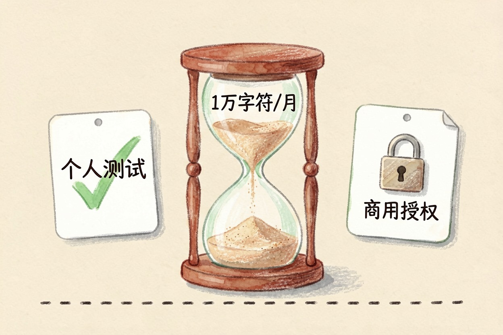
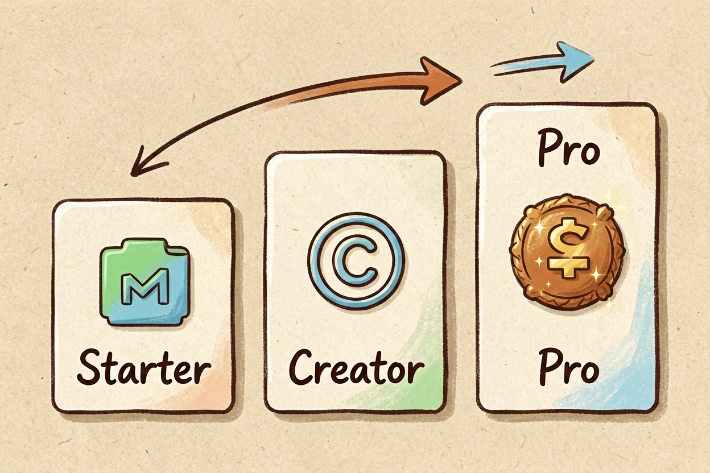

ElevenLabs 配音怎么样？中文效果与收费全解
它家中文配音在同类工具里排第一梯队，免费版每月只有 10 分钟。先用免费额度跑你自己的脚本，再决定要不要付费。
ElevenLabs 配音怎么样？一句话：中文自然度排第一梯队，免费额度一个月只有 10 分钟，商用还要付费。 如果你是 YouTube 主播、播客创作者或有声书译者，先拿免费额度跑一段真实脚本，再想想要不要升级。它的多语言模型支持 70 多种语言，中文是重点优化对象，但标点断句要手动调。
关键要点 - 中文自然度第一梯队，断句受标点影响，需微调- 免费版每月 10,000 字符（约 10 分钟音频），只够测试- Starter 约 $5/月，带基础商用许可，适合起步- 播客选 Starter、口播选 Creator、有声书选 Pro - 别在未授权情况下克隆他人声音
ElevenLabs 配音怎么样：中文效果
Multilingual v2 模型对中文语气把握不错。日常陈述句自然度能到 8 分。情绪表达掉到 6 分。技术名词发音准、语调偏平。逗号句号的位置直接决定停顿长短，想自然就得手动改标点。社区评测的结论是：中文是重点优化的语种，但离「听不出是 AI」还有距离。先用免费版跑一段真实脚本，比看任何评测都准。测试时可以这样调接口：
curl -X POST https://api.elevenlabs.io/v1/text-to-speech/{voice_id} \
-H "xi-api-key: 你的密钥" \
-H "Content-Type: application/json" \
-d '{"text": "你好，这是一段测试配音。", "model_id": "eleven_multilingual_v2"}'免费版够用吗

免费版每月给 10,000 字符，约 10 分钟音频，3 个自定义声音槽位，不能商用，没有语音克隆。测几个脚本、做几条短视频够用，但撑不起一期完整播客；一周更新好几期的创作者，三天就花光。判断标准很简单。个人学习、非商用，免费版够了。要拿配音赚钱，必须买商业许可。
付费方案怎么选

三个档位看字符量：Starter 约 $5/月、30,000 字符，带基础商用许可；Creator 约 $22/月、100,000 字符，完整商业权利；Pro 约 $99/月、500,000 字符，适合有声书工作室。中文每分钟大约 1,000 字符，算下来 Starter 约 30 分钟/月、Creator 约 100 分钟、Pro 约 500 分钟。档位间差距主要在字符额度、商用许可和语音克隆权限。按你每月产出的总时长对号入座，价格以 ElevenLabs 官网定价页当前说明为准。
按用途选：播客、口播还是有声书
播客一期 30-60 分钟，Starter 够起步。YouTube 口播更新频率高，Creator 更稳。整本有声书字符量几十万，得上 Pro。选错档位的典型后果：月中就断额度，或者为低频需求白花高价。不少用户反馈，多调「稳定性」和「相似度」滑块，中文听感能明显提升。原则是按分钟计用量、按用途选许可，动手前先做一段 5 分钟小样。
什么情况下别用 ElevenLabs
每年只做几个视频、预算极紧、要离线运行、追求零成本商用、要方言——这五类先别用。它适合愿意为音质和声音版权付费的人。别在未授权的情况下克隆他人声音，也别拿免费版硬撑商单。想横向比，看AI 配音工具哪个好；要配乐，看Suno 写歌怎么样。
别盲目升到最贵的档位，先用免费版试一个月。ElevenLabs 配音怎么样，最终由你的用量和预算回答：月产出 30 分钟内选 Starter，超 100 分钟选 Creator，做有声书再上 Pro。更多工具见AI 工具导航。
本文信息核对于 2026-08-06。AI 产品的价格、免费额度与功能变动频繁，实际以各工具官网当前说明为准。